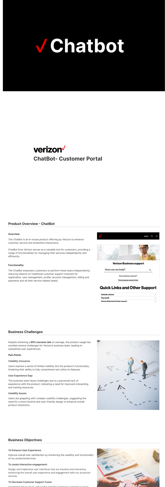
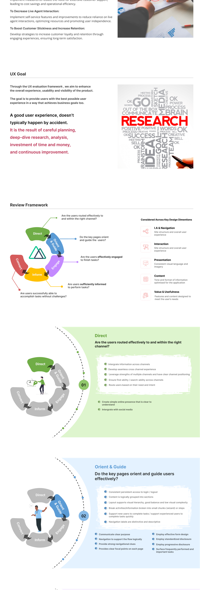
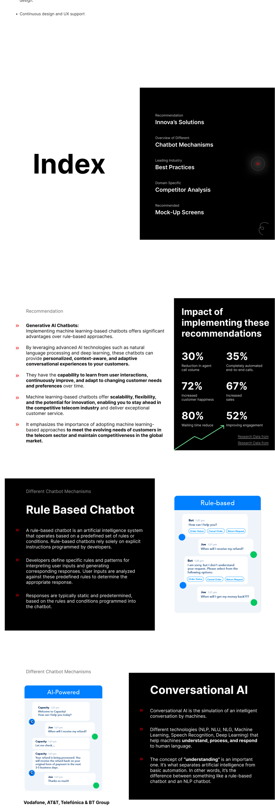
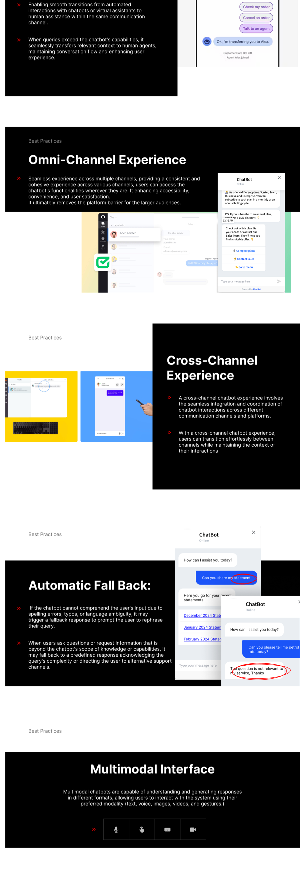
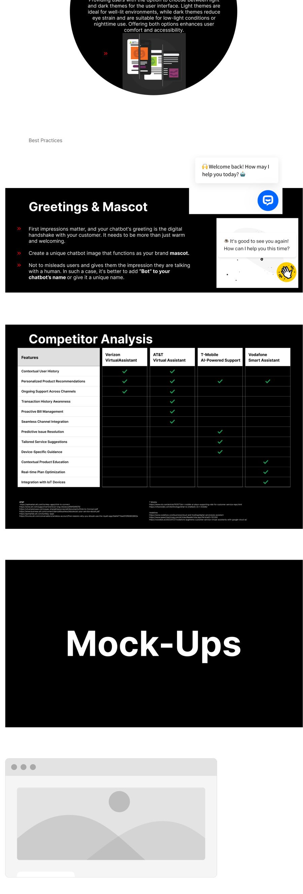
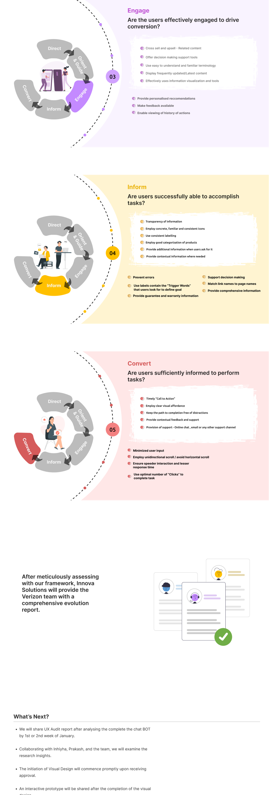
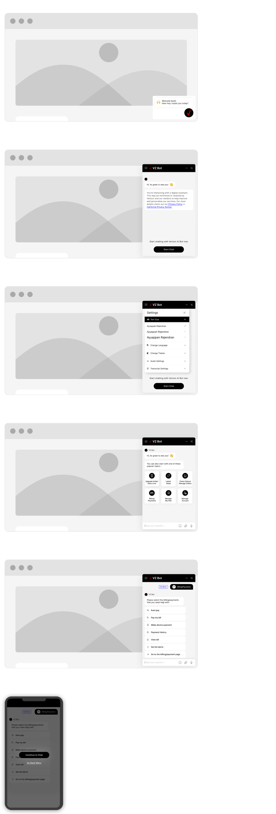
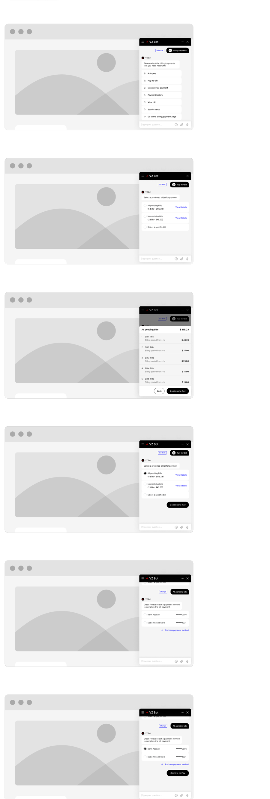
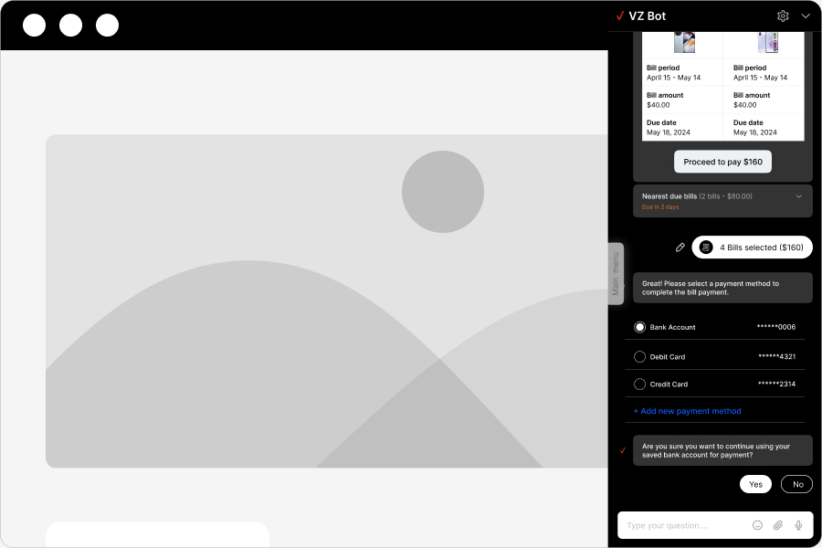

Auditing — Then Redesigning — Verizon's Business ChatBot
A 65% success rate looked fine on a dashboard. The full trace of the audit that showed why the business team still didn't trust it, and the redesign that followed it into production.

A success-rate number that didn't match how it felt to use
The metric said one thing, the business team said another
65% success is a number a dashboard is happy with and a business team still complains about. I treated that gap itself as the research question, rather than assuming the chatbot was simply "fine" because the topline number looked acceptable.
Three pain points from the team using it day to day
- Limited visibility into what the chatbot could actually do.
- An experience gap on the business side — the internal team itself wasn't trained or onboarded on the product.
- Usability friction that made even simple interactions feel harder than they should.
Building a lens before forming an opinion
Three complaints, one root pattern
Pattern → Insight: visibility, internal readiness, and usability friction all point at the same root — the chatbot was evaluated on task completion, never on comprehension or confidence. Read against the internal team's own framing — "customers don't know what this bot can actually help with," said with the defensiveness of a team whose dashboard says the product works — the pattern held: nobody had ever measured comprehension or confidence, only completion.
From a defensible metric to an indefensible experience
- §1Symptom. Business-team complaints despite a 65% success rate.
- §2Problem. The chatbot is evaluated on task completion, not on whether users understand what happened or what to do next.
- §3Root cause. No structured UX evaluation had ever been run against the product — only the completion metric existed.
The direct answer: build the missing lens
No structured evaluation existed → need a lens broader than task completion → opportunity: a named, criteria-based framework → solution: Direct, Orient & Guide, Engage, Inform, Connect.

- §1Direct — are users routed effectively to and within the right channel?
- §2Orient & Guide — do the key pages orient and guide users effectively?
- §3Engage — are users effectively engaged to drive conversion?
- §4Inform — are users sufficiently informed to perform tasks?
- §5Connect — are users successfully able to accomplish tasks without challenges?
Learning the category before recommending anything in it
Mapping the solution space before naming a fix
Before proposing what Verizon's chatbot should become, I mapped what a chatbot even is across the spectrum — rule-based versus conversational AI. A rule-based chatbot operates on predefined rules with static responses; conversational AI simulates genuine understanding via NLP, NLU, NLG, and deep learning. That distinction set the ceiling on what "Inform" and "Connect" could realistically achieve without a platform-level change, not just a UI one.

Industry best practices were brought in as design principles, not decoration: omni-channel and cross-channel continuity, automatic fallback so a misunderstood query never dead-ends, a multimodal interface, and a deliberate greeting/mascot design.

A sourced competitive gap analysis, in place of a formal matrix
Verizon's own VirtualAssistant was benchmarked directly against AT&T, T-Mobile, and Vodafone across eleven concrete capabilities — from contextual user history to predictive issue resolution to IoT device integration — sourced and cited rather than asserted from memory.

Testing the existing product against the framework, honestly
Not a user session — a scored evaluation against the framework
The 65% reframed
Scored against the framework, the 65% success rate stopped looking like a passing grade. It looked like a product that could technically resolve two out of three interactions while still leaving users unsure what it could do, unclear on next steps, and unable to self-serve with confidence — exactly the gap the business team had been describing anecdotally, now backed by a structured evaluation instead of a feeling.

Making "Inform" and "Connect" concrete, not theoretical
Popular topics first, not an empty prompt
The entry point leads with a popular-topics grid — upgrade order, latest deals, check status, billing and payments, manage plan, manage account — instead of an empty text box asking the user to guess what the bot can help with. A visible settings panel and an upfront, honest disclosure that the user is talking to a digital assistant address the "Direct" and "Inform" gaps directly.

Bill-pay, mapped step by step
Billing and payments — one of the highest-stakes tasks — got mapped as a full conversational flow: select a bill from pending or overdue, see it broken out with amounts, choose a saved payment method or add a new one, and confirm. Every step keeps the user informed of exactly where they are, which is precisely what "Connect" was measuring for.

The recommendation artifacts handed back to the team
The audit's findings became the brief — and the build
The recommendation mockups shipped, largely as designed
The popular-topics entry point and the bill-pay conversational flow from Section 05 went into visual design and were built into the live Business Support chatbot — closing the "Inform" and "Connect" gaps the audit identified, rather than leaving them as a report on a shelf.
Outcome · Future Scope · Prototype · Key Learnings
Outcome
| Metric | Result |
|---|---|
| Baseline success rate (existing product) | 65% |
| Competitor capability gaps identified | Sourced, cited comparison across 11 capabilities |
| Redesign status | Designed and shipped to production |
| Post-launch success rate / CSAT | Shipped — specific post-launch metrics not tracked for this case study |
I don't have a post-launch number to report here, and I'd rather say that plainly than invent one. What I can stand behind is the framework, the findings, and the fact that they're what the shipped redesign was actually built on — not a report that ended at recommendation.
Future Scope
- Measure success rate and CSAT on the shipped redesign against the pre-audit 65% baseline — not tracked as part of the original hand-off.
- Run a moderated usability round on the live redesign, closing the gap this audit's evaluation stage was explicit about.
- Extend the Direct/Orient & Guide/Engage/Inform/Connect framework to Verizon's other self-service products.
Prototype
The shipped redesign itself, in Figma — the popular-topics entry point and the full bill-pay conversational flow from Sections 05 and 06, at source resolution.

Key Learnings
- A healthy metric can hide an unhealthy experience65% success rate and "users don't trust this" were both true at the same time. The framework is what reconciled them.
- Define the rubric before forming the opinionFive named dimensions turned subjective critique into findings someone else could independently verify.
- Cite the competition, don't just gesture at itA sourced, feature-by-feature comparison against AT&T, T-Mobile, and Vodafone carries weight that "competitors are better" never will.
- An audit's real deliverable is the next phase's briefThe framework and findings didn't just get filed — they became the direct input to a redesign that was built and shipped. An audit told honestly still ends somewhere real.
The through-line: the most useful thing I delivered wasn't a mockup. It was a framework rigorous enough that Verizon's team built from it directly — and one they can reuse on the next feature.